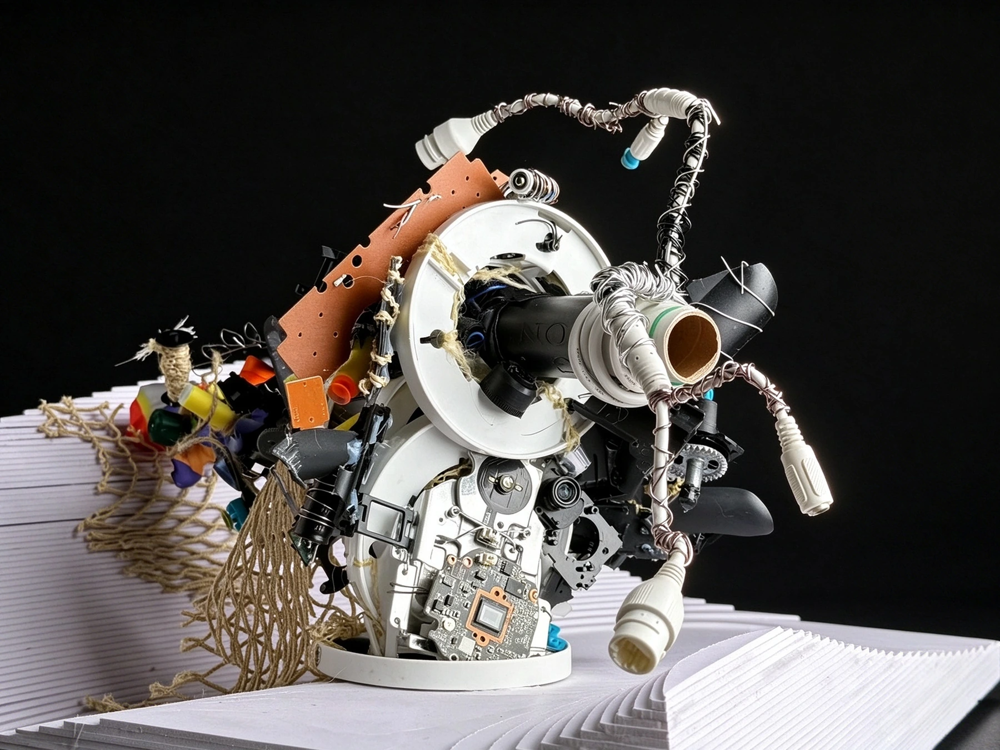
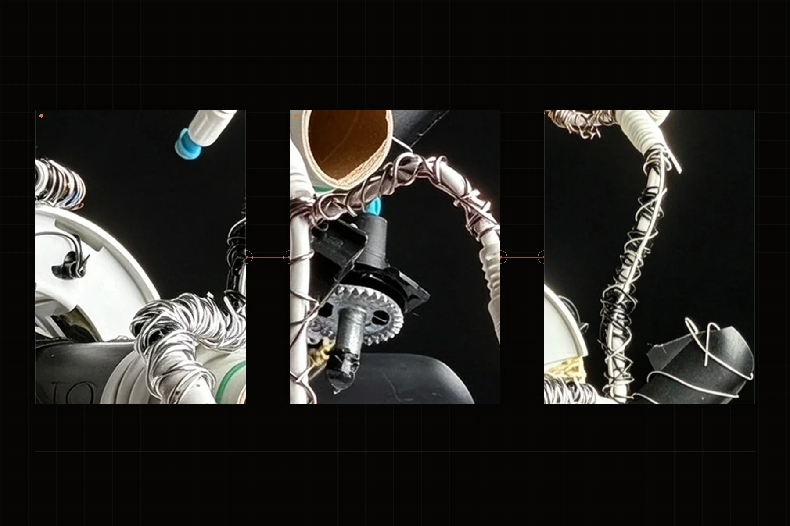
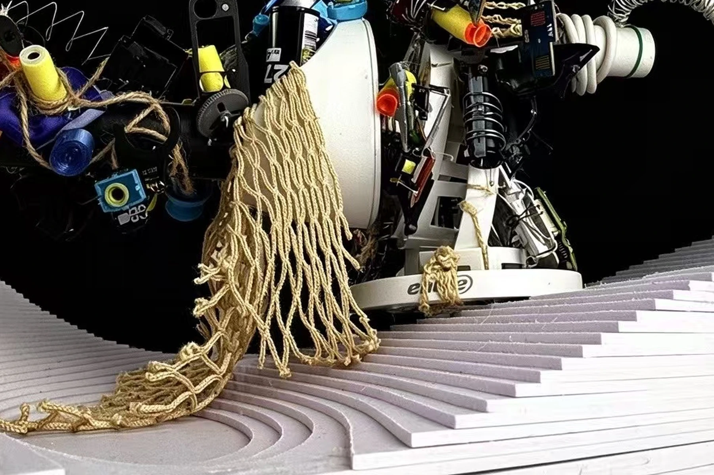
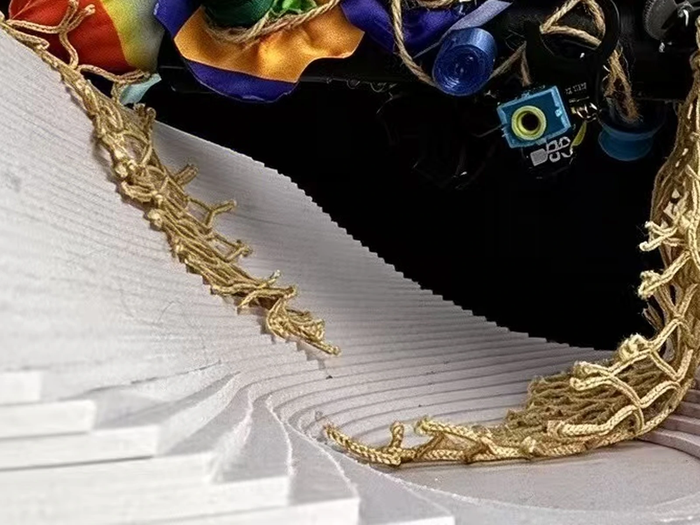
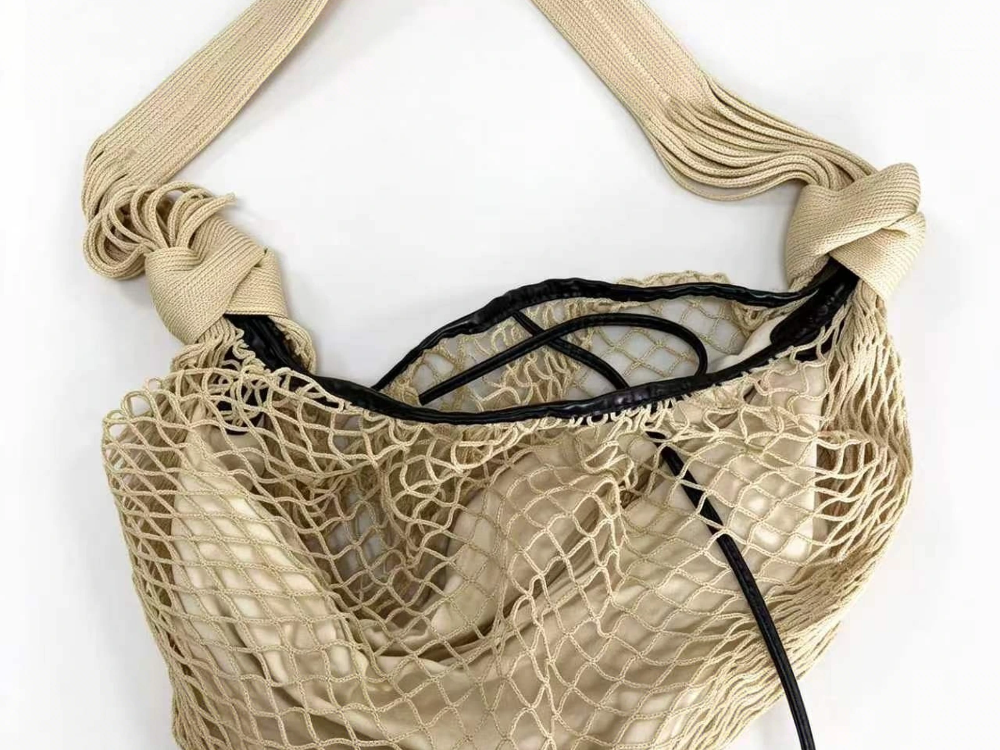

INTERACTIVE OBJECT05 / 综合模型
拖拽环视 / 5 个机位 / 8 个结构节点
INSPECT / 正面
01 / 12

LOADING VIEWS
机位 / VIEW
部件 / LAYERS
按类别归档
02
MATERIAL EVIDENCE
部件档案
按骨架、管线、零件、软性材料四类重新整理。
零件只作为零件被观看；悬停高亮，点击放大。
01
FRAME / STRUCTURE
骨架与支撑
白色环体、金属支架与 48 层纸板。承力结构不隐藏在内部，它直接构成机器的外轮廓。
02
PIPEWORK / CONNECTIONS
管线与连接
铜管、白色软管、编织线与插头。只保留管线与连接本身，按 R-01—R-03 读取接口走向。

PIPE ROUTE / 03 CONNECTIONS
R-01 — R-03
铜管从环体内部穿出，白色软管与编织线沿曲面底座延伸。所有连接都暴露在表面。
管线不是隐藏的线路，而是机器的外轮廓。沿着铜管、插头和编织线，可以读出零件的受力与连接顺序。
PIPE ROUTE / 可见连接
点选 R-01—R-03，读取每一段管路与接口的材料和连接方式。
03
MODULES / PARTS
零件模块
拆到零件层级的摄像头、照相机、手柄、玩具枪与钓具。这里只展示零件本身，不混入整机模型或软性材料。
04
FLEXIBLE / BINDING
软性材料
渔网、网袋、麻绳。它们不承重，负责打结、垂坠和缠绕，把分散的硬质零件重新绑成一个整体。

软性材料不承重。
它负责把时间打结。


渔网袋、麻绳与网目从机器上垂落，软性材料把硬质零件之间的空隙连接起来。
03
RATE THE OBJECT
匿名留言
为模型打分 · 匿名留言 · 随机阅读
五颗星，留给这台时间机器。
给这台模型一个分数，再留下一句话。这里不需要登录，也不需要署名。
—
/ 5
0 条留言
正在读取留言…
本地预览 · 连接公开留言服务后，留言才会对所有访客显示。
评分与留言会公开显示，请勿填写真实姓名、电话或其他隐私信息。不合适的内容可以在后台隐藏。
PUBLIC NOTES公开留言
尚未读取留言。